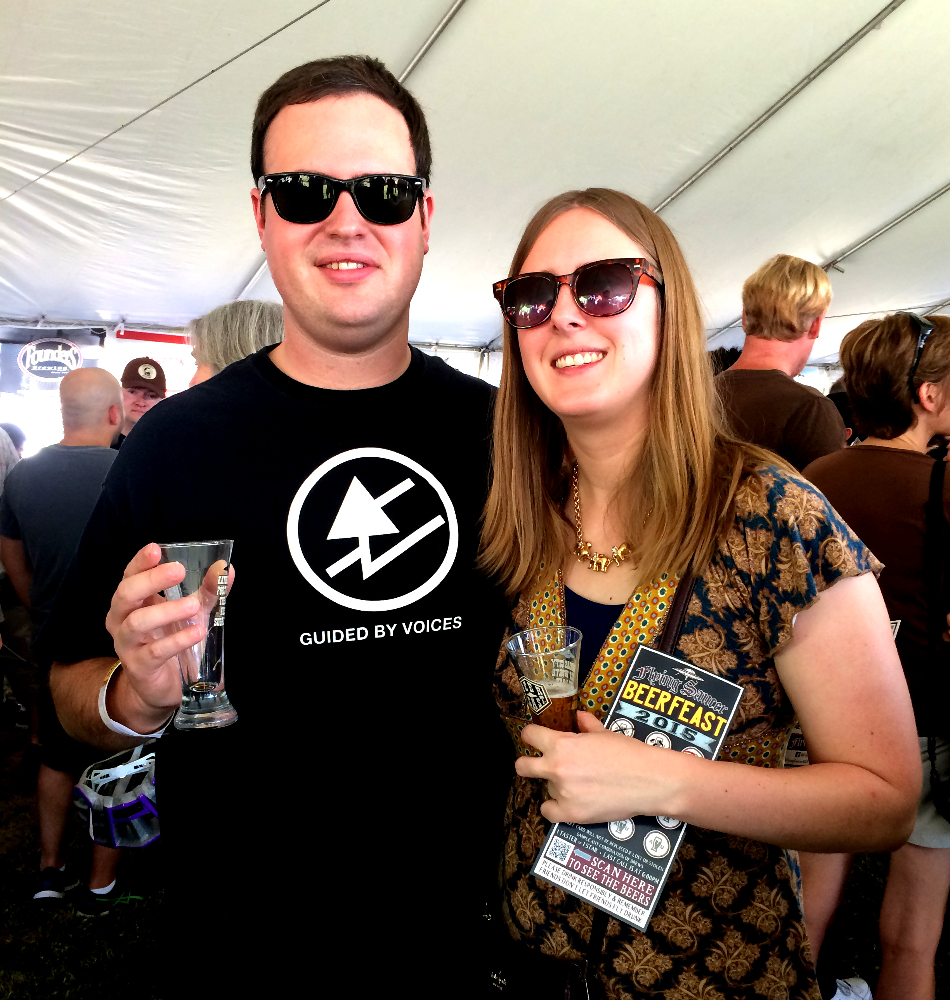
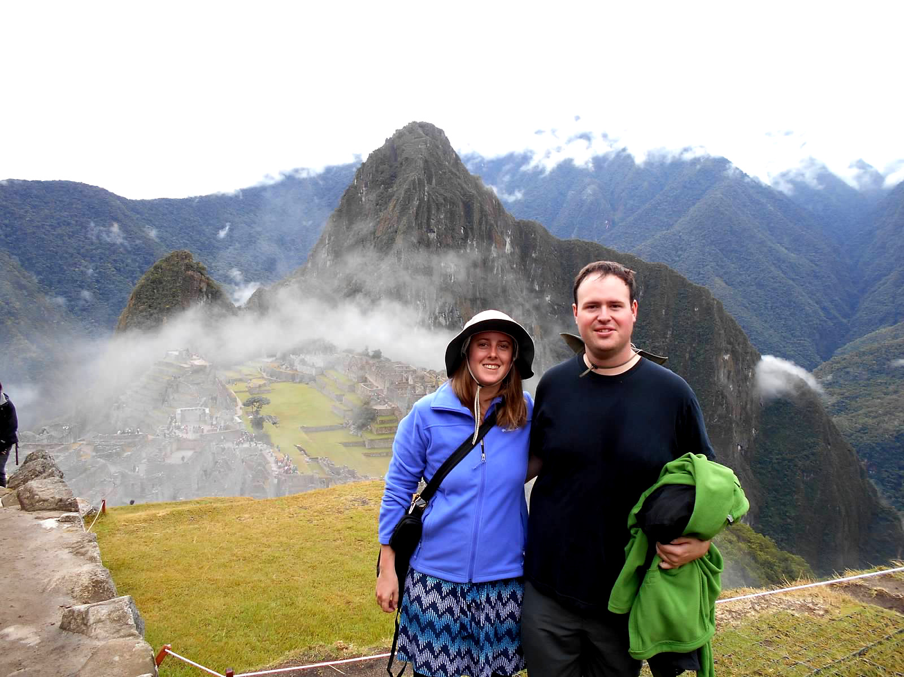
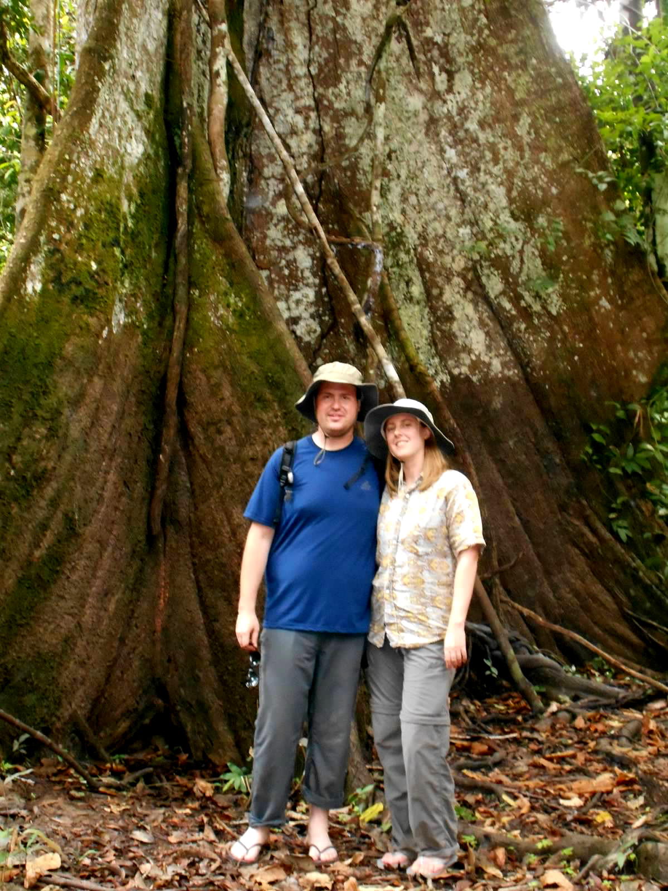
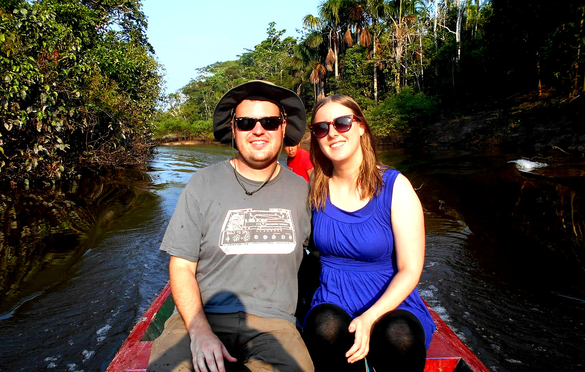

We met on March 15, 2012
It was the foreboding Ides of March during the South by Southwest festival at Auditorium Shores in downtown Austin, Texas, and the band The Shins were playing a show. Kathryn attended the show with her friend Rose Mathies, and Steve was there with his friend Jeff Hussmann. We became friends after this and got to know each other better for nine months, until we began dating in December 2015.

We both grew up in Pennsylvania
Both Kathryn and Steve lived in farmhouses as kids, as well--Kathryn in York, Pennsylvania and Steve in Erie, Pennsylvania. The cities are on opposite sides of the state, but they're similar in many ways. Both are bucolic with winding and hilly roads, near the Amish, and host large fairs each fall.
We enjoy live music and beer

Another of our shared interests is beer. Both of us like trying new craft beers and enjoying our favorites, and Steve also brews as a hobby. Here's a picture of us at Beerfeast 2015. Cheers!
Every year to celebrate the anniversary of when we started dating, Steve and I have gone to a different bed-and-breakfast in the Texas Hill Country. This picture is from the first year we did this, when we stayed in Fredericksburg. We'd just finished our tour of the Garrison Brothers Distillery and are tasting the bourbon. We'll probably start doing an annual getaway on our wedding anniversary in the future instead.
We travelled to Peru in 2015
We went to Peru for two weeks at the end of August in 2015. This was our first international trip together. We spent one week in Cusco and one week in Iquitos, staying in a jungle lodge on the Amazon.

Here we are at our favorite part of the trip, our Machu Picchu visit.
While we went on a walk through the jungle, we saw this quite old, very large tree.


Here's a picture of us leaving our jungle lodge in Iquitos, Peru.
We got engaged where we met
On Sunday, December 20, 2015, Steve suggested that we go for a walk around Town Lake in downtown Austin. We got engaged at Auditorium Shores in the same place where we first met, almost four years earlier. Here's a picture of us newly engaged.